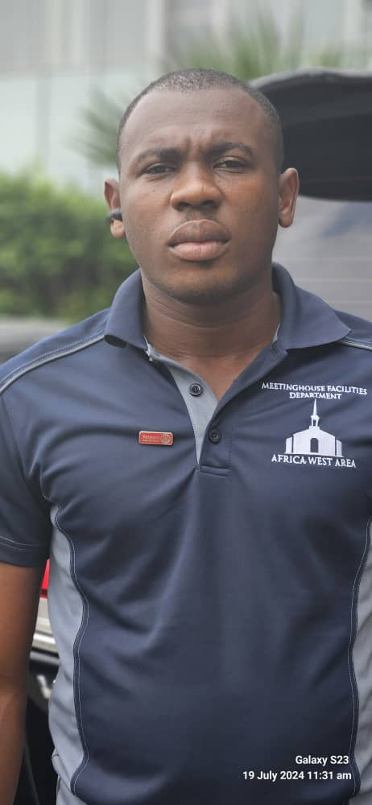

Chukwuemeka Okpara Sunday | WDD 130
Hi, I'm Chukwuemeka. I'm a student at BYU-Idaho, and I'm passionate about web development and programming. I enjoy learning new technologies and applying them to real-world projects.
Hi, I'm Chukwuemeka. I'm a student at BYU-Idaho, and I'm passionate about web development and programming. I enjoy learning new technologies and applying them to real-world projects.